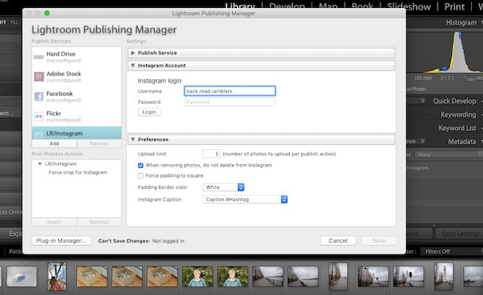
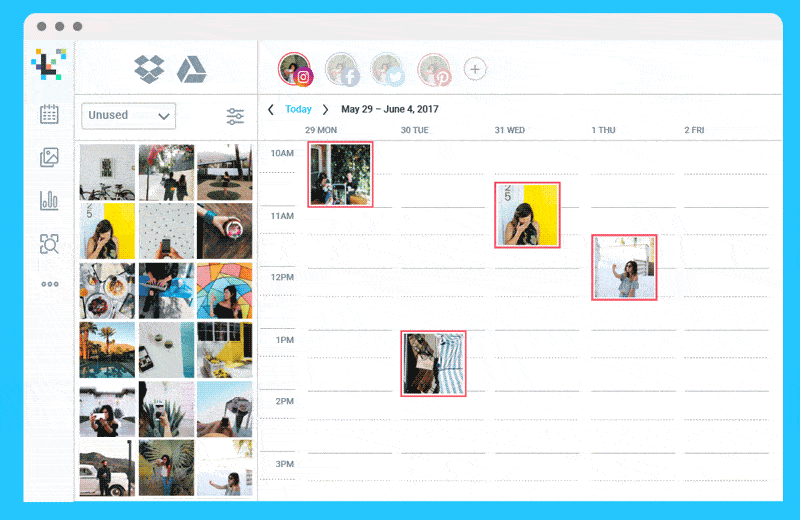
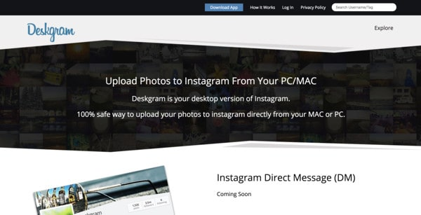

If you’re wondering how to post to Instagram from PC – you’re not alone.
Instagram might be one of the most popular social media platforms in the world – but it does make life more difficult for companies sometimes. For instance, you can’t share more than one link in your bio on Instagram, which means that pulling people back to your website isn’t easy.
What’s more, if you’re the kind of person who likes to take professional photos on a camera before uploading to Instagram, then there’s no direct way to add photos or videos to your account from a PC.
If you want to upload to Instagram from PC, then you’re going to need to use a workaround.
Why Can’t You Upload to Instagram from PC?
So, why on earth would Instagram want to stop users from posting directly from their computers?
Well, the company wants to encourage authentic usage of the app. In other words, Instagram wants you to upload pictures and images that are taken at the moment and uploaded directly from your phone.
Unfortunately, this means that you’re limited to the quality available from your phone camera – which might not be enough to earn the attention of millions of followers, now that Instagram is so popular.
The easiest way to post to Instagram from PC involves either using a desktop browser workaround, accessing a scheduler to do the uploading for you, or using a third-party app. Let’s take a look at each of the ways that you can upload to Instagram from PC, Mac, or virtually any browser.
How to Post to Instagram from your PC Browser
Let’s start with most common option: the browser workaround.
If you don’t want to sign-up for scheduling service, and you’re bored of relying on endless third-party tools for your social media marketing, then this is the most straightforward option. Most computer browsers come with an option that allows users to change their “user-agent” setting. This basically changes the way that your browser talks to certain websites.
Change your user agent, and you can convince Instagram that you’re logging in from a smartphone, even when you aren’t.
If You’re Using Safari…
If you’re on a Mac computer, you’ll need to enable the Developer menu to start messing around with user settings. To do this, go into the “Preferences” menu underneath the Safari tab:
From there, you can click on “Advanced” to take you into the menu that allows you to “Show Develop Menu in Menu Bar.” The Develop menu will appear at the top of your Safari page. Click on that, then scroll down to User-Agent. Here, you’ll get a separate list of options for how you want your browser to appear. You’ll need to select “iPhone” to post to Instagram from PC.
Once you’ve clicked on the iPhone view option, you’ll see your page as though it was on a mobile device. When this happens, the “Upload” button you typically get when you’re browsing on your phone will appear on the bottom of the page. All you need to do now is click on Upload, choose the file you want to share, and write a caption, as normal.
If You’re Using Google Chrome…
If you’re not a Mac user, then there’s a good chance you’ll be using Google Chrome. The Chrome browser has a 70% market share – with millions of users. In your Chrome browser, log into your Instagram account, then open your Chrome Developer tools by pressing Ctrl, Shift, and J.
Immediately, the developer console will appear on the right-hand side of your page. To view your Instagram feed just like it appears on your phone, press Ctrl, Shift, and M, or click on the small icon that looks like a phone here:

You don’t necessarily need to find the exact match to the phone you use to upload to Instagram from PC, but some people will prefer to do this. Click on the drop-down menu at the top of the screen and select the make and model of your phone. Now, your Instagram profile will appear just as it does on your phone, complete with the option to post to Instagram from PC.
Click on the Upload icon to add a photo or video from your files, and remember to add a caption and filters, just as you would on your phone.
This is probably the simplest and most straightforward way to start posting from your PC immediately, but it can be a bit of a pain for people who don’t want to switch back and forth between browser views. Additionally, using the Chrome Developer Tools means that you won’t be able to upload multiple videos or photos at once. Although you can geotag your locations, use filters, and @Mention other users, you’re not ready to share your content simultaneously across other social platforms either.
How to Post to Instagram from Adobe Lightroom
If you’re looking for ways to upload to Instagram from PC, then there’s a good chance that you’re using tools on your PC to enhance the appearance of your images before you publish them. If you happen to use Adobe Lightroom – one of the most popular editing tools, you will be able to upload images to Instagram directly from within Lightroom, using one of the free plug-ins for the tool.
The plugin does come with a one-time fee for registration of $10 – but that’s a small price to pay for convenience. To start using the Lightroom plugin, go to the LR/Instagram website, and download.
You should get access to the plugin as a ZIP file, which means that you’ll need to click on the file to expand it. Within Lightroom, click on the “File” tab, then scroll down to “Plug-In Manager” and select “Add.” This will open your file manager, where you’ll be able to find and install your Lightroom Instagram plugin.
With your new plugin installed, go to your Library in Lightroom where your Instagram photos are located. Here, you’ll see the LR/Instagram plugin listed under your Publish Services options in the sidebar. Double click on your plugin to use it and log into Instagram as normal. Once your credentials are authenticated, your Instagram profile photo will appear.

Once you have your Instagram information saved to the LR/Instagram plugin manager, this will create a published collection of Instagram photos that appear in your sidebar whenever you enter the Library view. Whenever you edit a photo in Lightroom, and you’re ready to publish it, you’ll be able to drag it into the Instagram Photos tab on your sidebar.
Click on the collection of Instagram Photos and choose the new image that you want to upload, then click on the “Publish” button to the right of your screen.
If you’re an Adobe Lightroom user, this will take a lot of the stress out of every time you need to post to Instagram from PC.
How to Post to Instagram using a Scheduling Tool
There are a lot of benefits to using an Instagram scheduling tool to simplify your social media marketing campaigns. With a scheduler, you can make sure that you’re always posting content at the time that best suits your audience. What’s more, you’ll be able to arrange for your material to appear according to promotional events and seasonal sales.
Perhaps the biggest benefit of using a scheduling tool, however, is that you can create Instagram posts in advance and publish them straight from your PC.
Though there are a lot of scheduling options out there, the most commonly preferred option is Later. All you need to get started with this scheduler is a business account with Instagram, and a free account on Later. You can also upgrade to the premium version of Later if you prefer having access to more advanced tools and features.
Once you have your Later account set up, add your Instagram log-in details to the system so you can begin posting. To post to Instagram from PC, you’ll need to set up the Later “Auto Publish” feature. This allows users to schedule a video or photo and automatically have it publish to Instagram without any need for push notifications.
Later is one of the few automatic publishing options available today that are approved by Instagram, so you know you’re not going to get into any problems with the algorithm. What’s more, with the media library from Later, you can upload, store, and manage a range of videos and photos from anywhere with a robust Wi-Fi connection.

Later also gives businesses and influencers the opportunity to drag and drop their photos into a calendar and see in advance how they’re going to look on their Instagram grid. This is particularly useful if you’re trying to create a specific aesthetic for your brand.
Aside from Later, you can also try:
How to Post to Instagram using Third-Party Tools
If using a browser workaround, Adobe Lightroom, or a scheduling tool doesn’t appeal to you, then there are several third-party apps you can try too. These solutions were specifically designed to assist people who want to upload to Instagram from PCs and Mac computers.
For instance, one of the most popular is Deskgram. This application allows Instagram users to upload videos and photos straight from their PC. What’s more, with Deskgram, you can create captions, tag accounts, and use all the hashtags that you like. Although there’s a free version of this tool, you won’t get the option to upload photos with it. Instead, you’ll need to upgrade to the premium version at $2.99 per month.

One of the things that makes Deskgram such a popular choice for those who want to post to Instagram from PC is the fact that it feels just like using your mobile Instagram app for posting. Once you’ve logged into your account, you can upload photos and compile your content just like you would on your phone.
Keep in mind that Deskgram is just for uploading your photos to the web, however. You won’t be able to schedule your posts in advance, and you won’t have access to extra filters that aren’t available on Instagram.
If you’re a Mac user, then you might prefer a solution specifically designed for Apple. Uplet is a downloadable Instagram tool that’s exclusively designed for Mac. The great thing about this tool is that it allows users to upload videos and photos from their computers in bulk. What’s more, with Uplet, you can still add all your filters and captions as you usually would on Instagram.
Uplet offers the option to send posts and content to multiple Instagram accounts at once, and the interface is exceptionally straightforward.
Once again, there are no specific editing features or unique filters here, and you won’t be able to schedule your Instagram posts to publish in advance.
Tools like Uplete and Deskgram are intended to give you a version of your mobile Instagram experience on your browser when all else fails. If you want access to a range of Instagram marketing solutions at once, then you might need something more advanced.
You’re Ready to Post to Instagram from PC!
There you have it; those are just some of our top suggestions for people who want to upload to Instagram from PC, without the hassle. Although in an ideal world, Instagram would allow users to publish their content from any environment, the workarounds above are currently the best options for those who want to edit and manage their material from their computers, before uploading it to Instagram.
What are your favourite ways to get posting to Instagram from a PC? Let us know in the comments below. Remember to contact SocialFollow if you need help getting the right eyes on the content that you publish too. We can help you grow your Instagram following the safe way!